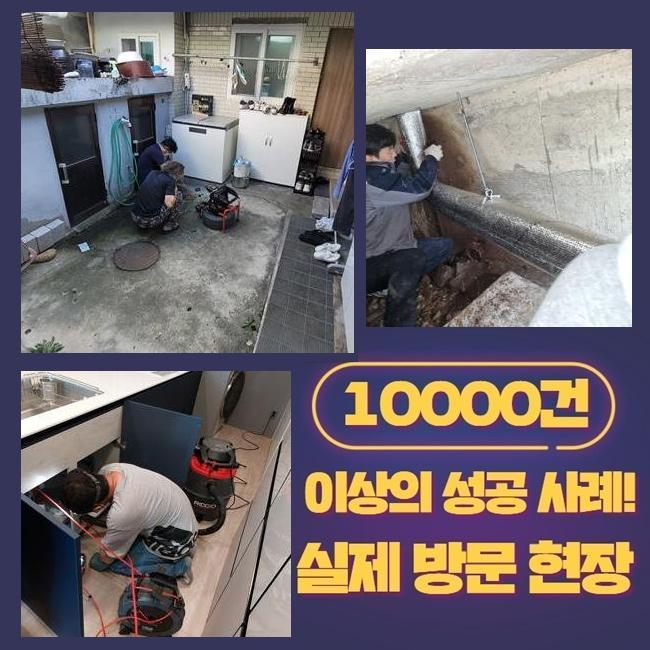
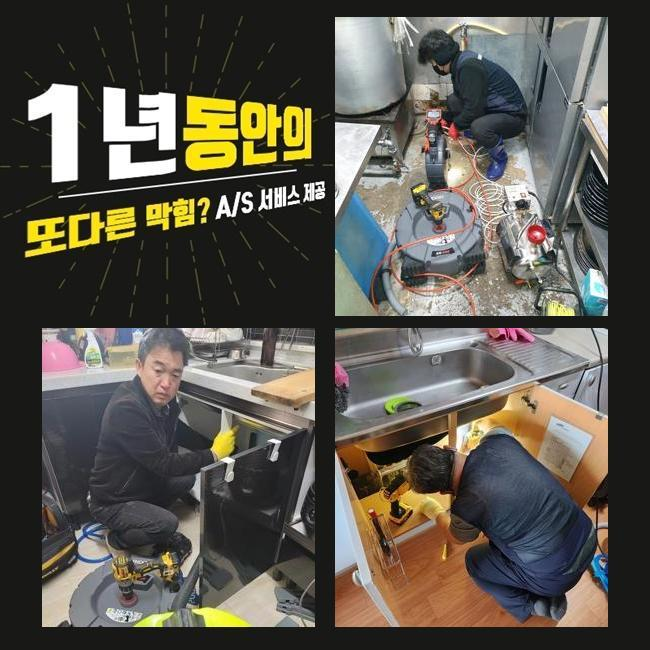
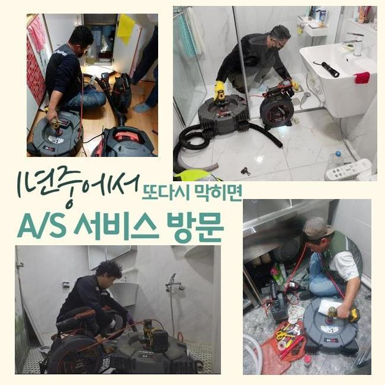
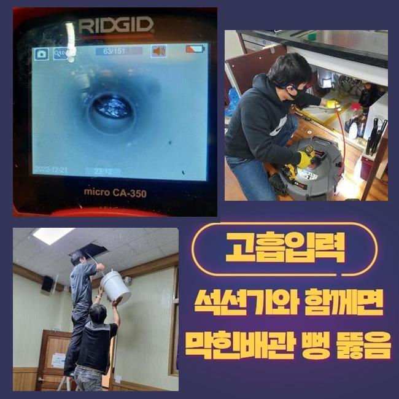
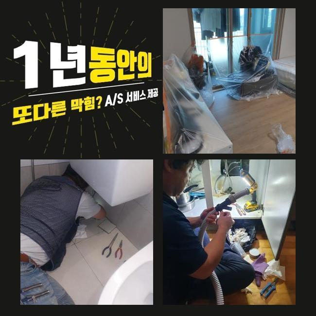
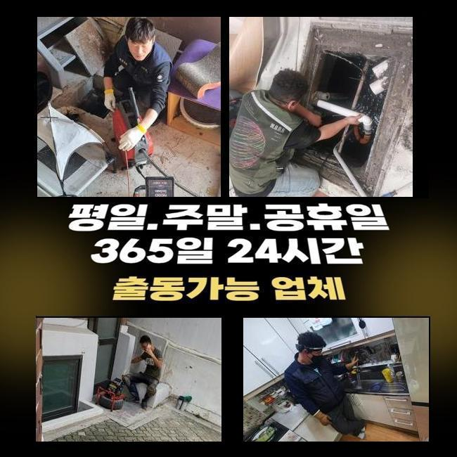

🏠 강남 개포동화장실바닥막힘 자곡동 하수관고압세척 설비업체
용인 하수구막힘 전문 시공 후기

📋 작업 개요
- 위치: 용인
- 서비스 유형: 하수구막힘, 배관막힘, 뚫는업체, 배관청소, 고압세척
- 작업 일시: 2025. 3. 7. 13:12
- 업체명: 하수구수사대 (010-5615-2118)
🔍 문제 상황
강남 개포동화장실바닥막힘 자곡동 하수관고압세척 설비업체
이번에는 한 건물에서 하수의 범람이 발생했음을 듣고서 빠르게 손봐드리려고 작업장소에 장비를 챙겨 갔습니다
여러 세대가 모인 건물이면 건물에 깔려있는 모든 배관이 메인배관에서 합쳐지는 구조를 띠고 있는 상황이 많은 편입니다
어떠한 구간에서 결함이 탄생했다고 해도 이 고장이 확산돼서 여러 사람들이 불편함을 경험하기도 합니다
이번에 수선을 해드렸던 건물은 여러 상가들이 성업 중인 상가빌딩이었으나 뜬금 없이 하수구가 불능이 되는 바람에 정상 운영에 문제가 생겨서 금전적인 부담까지 엎친데 덮친 격이었습니다
건물 내에서 하수설비에 대한 이슈가 거듭 터진다면 세입자나 건물주 모두에게 어려움을 부풀릴 수 있다보니 장치를 잽싸되 꼼꼼하게 챙긴 다음 설치된 하수구로 향합니다
도착 후에는 손상이 제일 극심한 장소로 가서 물내림의 정도를 체크합니다
통수테스트는 하수를 세게 틀어보고 배수구 구멍으로 쏟아부은 물이 어떠한 속도로 빠져나가나 테스트해서 성능을 검토하는건데요
꼴꼴 흘러나가는 스피드가 당연 굼떠진 게 눈에 들어왔고 좀처럼 내려가지 않는 순간이 나타난다는 것을 목격하게 됐습니다
종합적인 막힘의 문제들이 벌어지고 있는 현황을 고려하면 내면에 생각보다 많은 오염원인들이 자리하고 있을 확률이 매우 유력합니다

🔎 원인 분석
💡 전문가 진단: 정밀 진단 장비를 사용하여 슬러지의 고착 여부를 판명하고 타격/세척 작업을 실시했습니다.
이런 슬러지를 재빠르게 처리해서 말끔하게 되돌리지 못하면 인접한 배관 통로까지도 장애가 전염되듯 퍼져나가므로 빠르게 움직여야 했습니다
건물의 하수장애를 낳는 문제들은 관로 여기저기에 붙은 이물질이 대부분이니 이것들을 모조리 청소를 해나가야 말끔해집니다
고객님들이 평범하게 물을 쓰실 때마다 물 자체에 내포된 물질이 많은데 배수구 구멍을 통해서 옥외로 향하는 과정마다 한 파트에 접착돼서 통수의 방해물이 될 수 있습니다
휴지통 대신이라는 맥락으로 찌꺼기를 흘려보내는 것 이외에도 생활용수 속의 석회물질 미네랄 등이 고체가 될 수 있습니다
카메라로 속을 들여다 보니 유분막과 머리카락처럼 견고한 성질의 물에 안 녹는 것들이 형태를 알아보기 힘들게 뭉쳐있었습니다
이렇게 똘똘 뭉쳐있다가 오래 화석처럼 굳어버린다면 처치곤란의 방해물이 돼요
통로를 꽉 채운다면 더러운 물의 역행까지 맞이해야만 하는 난관에 봉착하게 됩니다
축축한 습기에 닿는다면 더 빠르게 썩어나갈 경우가 상당히 많고 이 물질이 풍겨대는 악취마저 스멀스멀 풍겨와서 생활이 더욱 까다로워집니다
물을 이동시키는 배관은 언제나 습기가 차있기에 오물도 더 빨리 썩어가며 냄새분자가 확 퍼져버려요
침전물이 붙은 장소가 다발적일 수 있다보니 검사할 때 하나도 놓쳐서는 안됩니다
단순하게 한 포인트만 문제라면 흡입을 돕는 석션만으로도 물이 소통되게 할 수 있어요

🔧 작업 과정
배관 자체가 독특한 형상이거나 관로가 복잡하게 이어져있다면 물살이 방해받는 구간들이 은근 많다고 느껴질 것입니다
배관의 모양이나 오염된 곳이 얼마나 넓은지 미리 탐색하는 게 필요합니다
다량의 물을 한방에 배출해도 뚫음작업에 실패했다면 오물이 너무 커졌다거나 고형화가 됐을 것입니다
이와 같은 쉽지않은 하수도 막힘을 해결해 내기 위해서는 막힘을 유발한 뿌리를 발굴해서 그 자리에서 떼내야 합니다
장기간 누적된 침전물의 세기같은 배수로 안의 현황을 보아야 무슨 장비를 쓸지 정할 수 있습니다
배관에 특화된 카메라 장치는 어둑하고 칙칙한 관로를 현재 상황에 대해 알려주는 장치로써 찌꺼기가 고정된 좌표와 노폐물의 특성과 크기를 판단할 수 있도록 보조합니다
내시경을 때때로 작동시켜서 조사를 해보면 작업이 그밖의 문제점들은 없는지 중간 체크를 해주기 때문에 보다 효율적인 청소가 이뤄집니다
장소에 도착하자마자 관로의 형상을 보기 위해서나 끝맺음을 하기 전에 마무리 상태를 더블체크 해주기 위한 수단으로 활용하고 있습니다
내시경을 이리저리 옮겨가며 확인하니 메인관로를 포함하여 인접한 파이프까지도 이 노폐물들이 누적되어 있음을 몸소 깨닫게 되었습니다
비교적 가벼운 막힘이라면 진동을 소지한 단단한 와이어 스프링이나 회전력 좋은 샤프트로 오물을 분해해서 막힘을 척결할 수도 있습니다
규모가 큰 옥외 설비의 생각보다 넓은 섹션들에 오물이 들어갔다면 획기적인 변화를 보기는 다소 힘들 수 있습니다
넓은 면적이에 비례해서 누적된 오염원이 브레이크없이 쌓여만가니 석션의 집수통에 모아서는 수습자체도 정말 힘들 것입니다
청소할 장소가 광활할 시에는 파워있는 물살을 쏘는 고압수를 분사하는 솔루션이 적절할 것이빈다
작업을 해줄 하수 설비의 사이즈에 꼭 맞는 부품을 결합해서 해당 방향으로 물을 내보내는 원리이며 견고화가 이뤄진 오물까지 싹 제거됩니다
과거에 설치된 배수로는 생각보다 강하지 못해서 하자를 야기하지 않을 사용법을 철저히 수행합니다
하수구 안을 고쳐주기 전에 배수로의 결함과 취약점에 대해서도 사전검진을 충분히 거친 후에 청소 작업을 담당하고 있습니다
장소마다 강도 조절을 하면서 배관 청결 작업을 꾸준하게 해준 결과로 아까는 배관 속을 위협하던 오염요소들을 속 시원하게 덜어낼 수 있었어요


✅ 작업 완료
갈린 흔적이 되는 파편까지도 잔여량이 없는지를 검토하면 본연의 하수구 기능을 회복시키는 모든 단계가 끝납니다
물이 시원스럽게 나가는지 배수 검사까지 도맡아드리고는 질의사항이 있다면 놓치지 않고 이해되도록 알려드려요!
외양이 깔끔한지도 체크하고 통수가 되돌아왔는지 끝까지 신중을 기하고 있습니다
여러 기능의 장치들을 복합적으로 쓰며 높은 만족도를 얻으시도록 하수구의 불능 사태를 맞춤으로 수습해 드리겠습니다!
고객님 댁의 하수에 대해서 도움을 요청하시고 싶다면 시간 상관없이 연락 부탁드립니다!




⚠️ 하수구 배관 막힘 예방 및 관리 가이드
- ✅ 머리카락, 비닐, 물티슈 등 물에 분해되지 않는 이물질은 하수구 유입을 절대 금지해 주세요.
- ✅ 하수구 거름망을 씌우고 모여진 이물질은 주기적으로 쓰레기통에 바로 비워주셔야 합니다.
- ✅ 배관 노후가 심할 경우 이물질이 더 쉽게 걸리므로 주기적인 배관 세척(고압세척 등)을 권장합니다.
- ✅ 작업 후 1년 이내 재발 시 하수구수사대에서 무상 A/S 보증 서비스를 제공합니다.
💡 핵심 정리
- 확실한 장비 작업(내시경 점검 및 샤프트 스케일링)으로 원인을 뿌리 뽑습니다.
- 작업 후 1년 이내에 동일한 부위 재발 시 100% 무상 A/S 서비스를 보장합니다.
- 서울 · 경기 · 인천 전 지역에 24시간 언제든 긴급 출동할 수 있도록 항시 대기 중입니다.
❓ 자주 묻는 질문 (FAQ)
🚨 용인 하수구막힘 문제로 고민이신가요?
정확한 원인 진단과 확실한 시공으로 재발 없는 해결을 약속드립니다.
24시간 긴급 출동 | 서울 · 경기 · 인천 전지역 | 1년 내 재발 시 무상 A/S